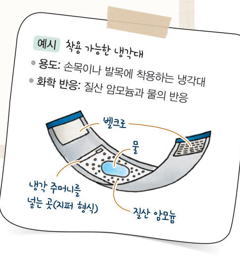
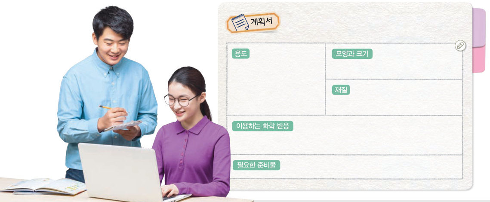
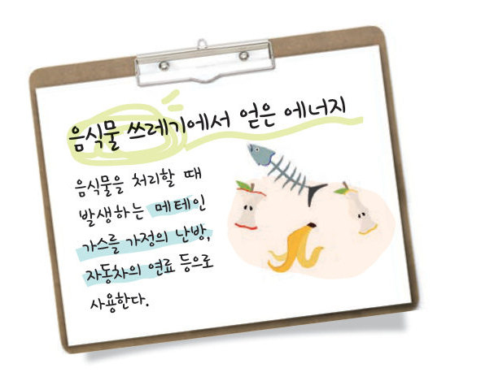

발열 도시락처럼 화학 반응의 에너지 출입을 이용한 장치를 직접 설계해 보자. 설계 도우미로 용도에 맞는 반응을 고르고, 설계도를 완성한 뒤 대단원 최종 점검으로 Ⅰ단원을 마무리하자.

| 장치 이름 | |
|---|---|
| 용도 | |
| 이용하는 화학 반응 | |
| 재질 · 모양과 크기 | |
| 필요한 준비물 | |
| 안전을 위한 고려 사항 |
| 평가 기준 | 스스로 평가 |
|---|---|
| 탐구 기능 장치에 적합한 화학 반응을 선택하였는가? | |
| 인성 자신의 의견을 적극적으로 표현하고, 다른 사람의 의견을 존중하였는가? | |
| 인성 모둠 구성원과 협력하며 활동하였는가? |

물질 변화, 화학 반응의 규칙, 화학 반응에서의 에너지 출입 등을 주제로 하여 과학 시화를 만들어 보자. 프로젝트 활동으로 만든 작품으로 과학 시화전을 열고, 내용 적합성, 참신성, 완성도 등의 평가 항목에 따라 동료 평가를 해 보자.
| 평가 기준 | 스스로 평가 |
|---|---|
| 화학 반응에서의 에너지 출입을 활용한 장치를 설계하고 만들 수 있다. | |
| Ⅰ단원에서 배운 화학 반응의 규칙과 에너지 출입을 설명할 수 있다. |